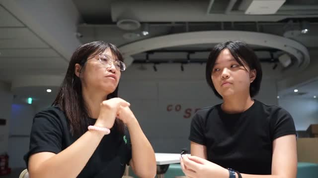
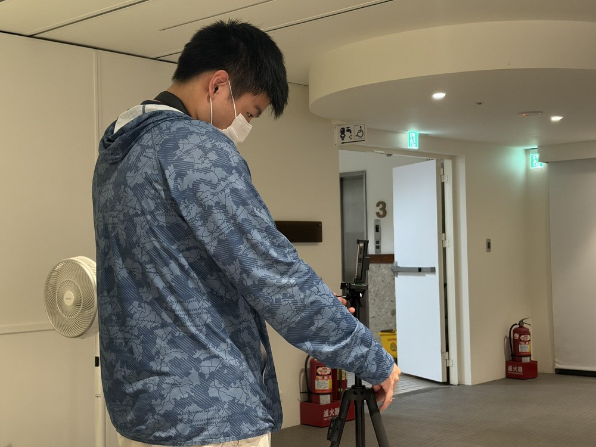
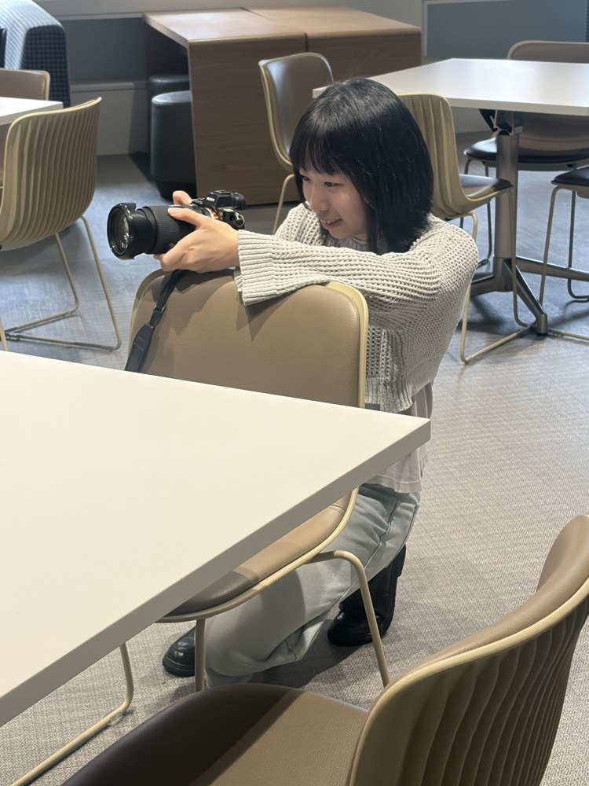
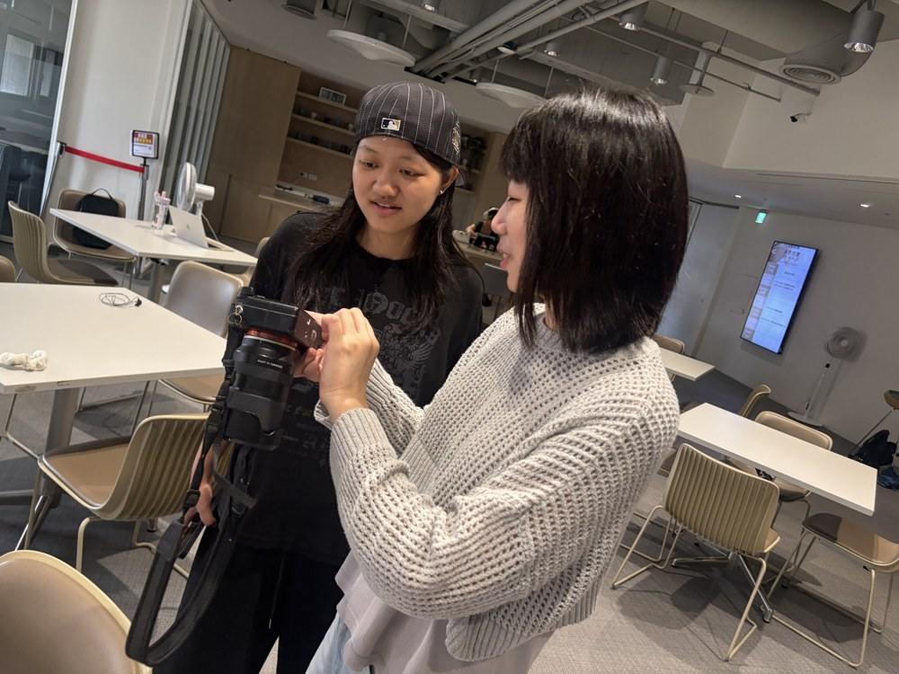
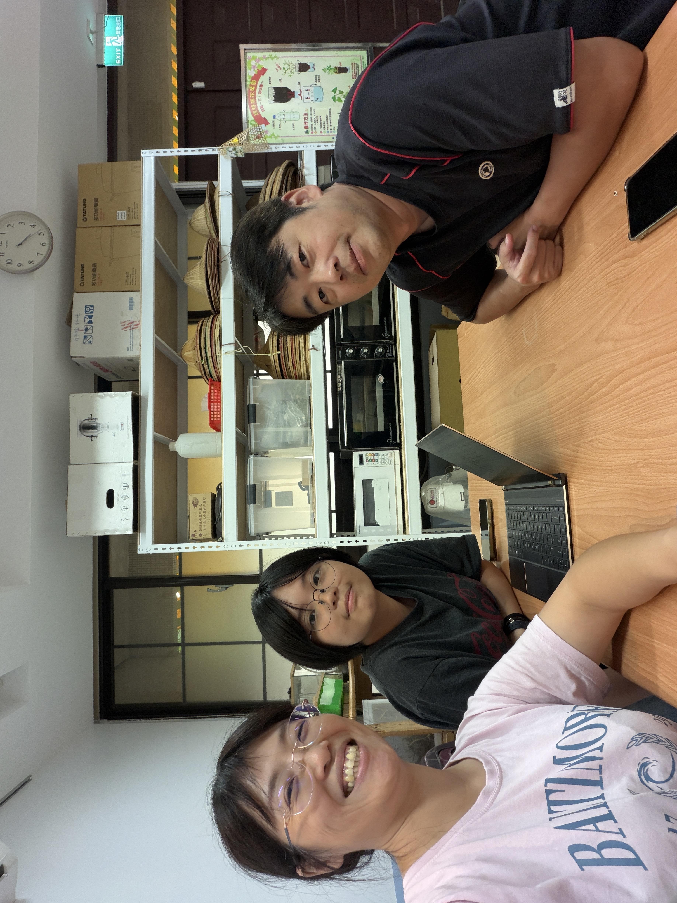

<!DOCTYPE html>
<html lang="zh-Hant">
<head>
<meta charset="UTF-8">
<meta name="viewport" content="width=device-width,initial-scale=1,viewport-fit=cover">
<meta name="theme-color" content="#07110f">
<title>臺大生態探索｜NTU EcoQuest</title>
<style>
:root{--bg:#06100d;--bg2:#0b1b15;--panel:#10251d;--panel2:#173229;--text:#f5f5ec;--muted:#a9bbb1;--line:#2d4a40;--glow:#eef7a9;--glow2:#c9df73;--warm:#f1e6a7;--orange:#e6a36e;--shadow:rgba(0,0,0,.38)}
*{box-sizing:border-box;-webkit-tap-highlight-color:transparent}
html,body{margin:0;min-height:100%;background:#050d0a;color:var(--text);font-family:-apple-system,BlinkMacSystemFont,"Segoe UI","Noto Sans TC","PingFang TC","Microsoft JhengHei",sans-serif}
body{display:flex;justify-content:center;background:radial-gradient(circle at 50% 0,rgba(71,110,83,.2),transparent 28%),#050d0a}
button{font:inherit}.app{width:min(100%,560px);min-height:100vh;position:relative;overflow:hidden;background:linear-gradient(180deg,#081610,#050d0a 70%);box-shadow:0 0 100px rgba(0,0,0,.32)}
.screen{min-height:100vh;padding:20px 18px 132px;animation:enter .38s ease}@keyframes enter{from{opacity:0;transform:translateY(8px)}to{opacity:1;transform:none}}
.top{display:grid;grid-template-columns:72px 1fr 72px;gap:8px;align-items:center;position:sticky;top:0;z-index:20;padding:8px 0 10px;background:linear-gradient(180deg,rgba(6,16,13,.98),rgba(6,16,13,.78),transparent);font-size:12px;color:var(--muted)}
.top .mid{text-align:center;overflow:hidden;text-overflow:ellipsis;white-space:nowrap}.back{border:0;background:none;color:var(--muted);text-align:left;cursor:pointer;padding:4px 0}.num{text-align:right}.bar{height:3px;background:#173027;border-radius:4px;margin:-4px 0 20px;overflow:hidden}.bar i{height:100%;display:block;background:var(--glow2);transition:.35s}
h1,h2,h3,p{margin-top:0}h1{font-size:40px;line-height:1.12;margin-bottom:12px}h2{font-size:28px;line-height:1.35;margin-bottom:14px}h3{font-size:18px;color:var(--warm);line-height:1.45;margin-bottom:9px}p{font-size:16px;line-height:1.82}.muted{color:var(--muted)}.eyebrow{font-size:11px;letter-spacing:.16em;color:var(--glow2);text-transform:uppercase;margin-bottom:10px}
.hero{min-height:68vh;display:flex;flex-direction:column;align-items:center;justify-content:center;text-align:center}.glow{width:18px;height:18px;border-radius:50%;background:var(--glow);box-shadow:0 0 17px 7px rgba(238,247,169,.42),0 0 65px 28px rgba(238,247,169,.08);animation:pulse 2.3s infinite;margin:24px}@keyframes pulse{0%,100%{transform:scale(.88);opacity:.78}50%{transform:scale(1.17);opacity:1}}
.card{background:linear-gradient(180deg,rgba(18,43,34,.97),rgba(10,26,20,.97));border:1px solid var(--line);border-radius:22px;padding:19px;margin:14px 0;box-shadow:0 16px 44px var(--shadow)}.quote{border-left:2px solid var(--glow2);padding:3px 0 3px 14px;color:var(--warm);font-size:18px;line-height:1.7;margin:20px 0}.bigq{font-size:27px;line-height:1.48;text-align:center;color:var(--warm);margin:29px 0}
.cta{position:fixed;z-index:30;left:50%;bottom:0;transform:translateX(-50%);width:min(100%,560px);padding:16px 18px 22px;background:linear-gradient(180deg,transparent,rgba(6,16,13,.95) 26%,#06100d 60%)}.primary,.secondary{width:100%;padding:16px 18px;border-radius:16px;font-weight:800;cursor:pointer}.primary{border:0;background:var(--glow);color:#132015;box-shadow:0 0 22px rgba(238,247,169,.15)}.primary:disabled{opacity:.32;cursor:not-allowed}.secondary{margin-top:9px;background:#13291f;color:var(--text);border:1px solid var(--line)}
.visual{height:215px;border:1px solid var(--line);border-radius:23px;margin-bottom:20px;display:flex;align-items:center;justify-content:center;text-align:center;padding:20px;position:relative;overflow:hidden;background:radial-gradient(circle at center,rgba(238,247,169,.06),transparent 58%),#091812}.visual.lines:before,.visual.lines:after{content:"";position:absolute;width:145%;height:2px;background:#7f9d8e;opacity:.45;transform:rotate(19deg)}.visual.lines:after{transform:rotate(-27deg);top:68%}.visual.spot{background:radial-gradient(circle at 50% 22%,rgba(238,247,169,.52) 0 8%,rgba(238,247,169,.13) 18%,transparent 42%),#050d0a}.visual.room{background:linear-gradient(180deg,#192720,#0a110e)}.visual.archive{background:linear-gradient(135deg,#20231d,#09110e)}.visual.stage{background:radial-gradient(circle at 50% 10%,rgba(238,247,169,.25),transparent 38%),#070e0c}.visual.future{background:linear-gradient(135deg,#17312e,#121825 45%,#271836)}.huge{font-size:54px}
.memvideo{display:block;width:100%;aspect-ratio:16/9;border:1px solid var(--line);border-radius:23px;margin-bottom:20px;background:#000;object-fit:cover}
.pills{display:flex;gap:7px;flex-wrap:wrap;justify-content:center}.pill{padding:7px 11px;border-radius:999px;border:1px solid var(--line);background:#0d1f18;color:var(--muted);font-size:13px}.action{display:inline-block;padding:7px 11px;border-radius:999px;border:1px solid var(--line);color:var(--glow2);font-size:13px}
/* game hud */
.game-hud{display:flex;justify-content:space-between;align-items:center;margin:8px 0 14px}.quest{font-size:14px;color:var(--muted);line-height:1.55}.badge{font-size:12px;color:#182116;background:var(--glow2);border-radius:999px;padding:5px 9px;font-weight:800}.hint{text-align:center;color:var(--muted);font-size:15px;line-height:1.65;margin:8px 0 15px}.instruction{border:1px solid rgba(201,223,115,.38);background:rgba(201,223,115,.07);border-radius:16px;padding:13px 15px;margin:10px 0 17px;font-size:15px;line-height:1.65;color:var(--text)}.instruction b{color:var(--glow)}.gamebox{border:1px solid var(--line);border-radius:24px;background:linear-gradient(180deg,#0c1e17,#07130f);min-height:370px;position:relative;overflow:hidden;box-shadow:inset 0 0 40px rgba(0,0,0,.16);margin:8px 0 18px}
/* q1 web */
.web{height:390px}.web svg{position:absolute;inset:0;width:100%;height:100%;pointer-events:none}.web line{stroke:#42685a;stroke-width:1.5;transition:.5s}.web line.cut{stroke:#815f54;opacity:.13}.webnode{position:absolute;width:76px;height:76px;border-radius:50%;border:1px solid #3b6254;background:#112a21;display:flex;flex-direction:column;align-items:center;justify-content:center;gap:2px;font-size:13px;cursor:pointer;transition:.3s;box-shadow:0 6px 22px rgba(0,0,0,.25)}.webnode b{font-size:24px}.webnode:hover{transform:scale(1.04)}.webnode.cut{opacity:.22;filter:grayscale(1);transform:scale(.9)}.webnode.affected{border-color:#9b7e56;animation:shake .35s 2}@keyframes shake{25%{transform:translateX(-3px)}75%{transform:translateX(3px)}}
/* q2 spotlight */
.spotgame{height:400px;background:#020806}.spotlight-orb{position:absolute;width:210px;height:210px;border-radius:50%;background:radial-gradient(circle,rgba(238,247,169,.48),rgba(238,247,169,.14) 38%,transparent 68%);transform:translate(-50%,-50%);transition:.38s;pointer-events:none;filter:blur(.2px)}.organism{position:absolute;width:88px;height:88px;border-radius:18px;border:1px solid #273b34;background:#07130f;color:var(--muted);display:flex;flex-direction:column;align-items:center;justify-content:center;text-align:center;cursor:pointer;transition:.28s;padding:7px;font-size:13px;line-height:1.35}.organism b{font-size:27px}.organism.lit{color:var(--text);border-color:var(--glow2);background:#163127;transform:scale(1.07)}.coin{position:absolute;right:14px;top:14px;background:#f0d67d;color:#2d2511;width:56px;height:56px;border-radius:50%;display:flex;align-items:center;justify-content:center;font-weight:900;box-shadow:0 0 20px rgba(240,214,125,.25);z-index:3}.coin.spent{animation:coinfly .6s both}@keyframes coinfly{to{transform:scale(.3);opacity:0}}
/* q3 timeline */
.chart{height:210px;position:relative;margin:16px}.chart svg{width:100%;height:100%}.chart polyline{fill:none;stroke:var(--glow2);stroke-width:4;stroke-linecap:round;stroke-linejoin:round}.chart circle{fill:var(--glow);stroke:#172218;stroke-width:3}.yearout{text-align:center;font-size:42px;color:var(--warm);font-weight:800}.popout{text-align:center;color:var(--muted)}.range{width:100%;accent-color:#c9df73}.pressure{display:grid;grid-template-columns:1fr 1fr;gap:8px;padding:10px 16px 18px}.pressure div{border:1px solid var(--line);background:#10241c;border-radius:13px;padding:11px;font-size:14px}.strategy-grid{display:grid;gap:10px;margin-top:13px}.strategy{border:1px solid var(--line);background:#10241c;color:var(--text);border-radius:15px;padding:15px 16px;text-align:left;cursor:pointer;font-size:16px;line-height:1.45}.strategy.on{border-color:var(--glow2);background:#19352a}.strategy small{display:block;color:var(--muted);margin-top:5px;font-size:14px;line-height:1.5}
/* q4 archaeology */
.digsite{height:410px;background:linear-gradient(#10211b 0 30%,#4a3c2b 30% 48%,#382d21 48% 68%,#2c231b 68%);position:relative}.layerlabel{position:absolute;right:10px;font-size:10px;color:rgba(255,255,255,.45)}.artifact{position:absolute;width:62px;height:62px;border-radius:50%;border:1px dashed rgba(255,255,255,.25);background:rgba(7,14,11,.38);display:flex;align-items:center;justify-content:center;font-size:27px;cursor:pointer;filter:brightness(.5);transition:.3s}.artifact.found{filter:none;border:1px solid var(--glow2);background:#163026;box-shadow:0 0 18px rgba(238,247,169,.16);transform:scale(1.08)}.foundbar{display:flex;gap:7px;justify-content:center;margin:10px}.founddot{width:10px;height:10px;border-radius:50%;background:#213b31}.founddot.on{background:var(--glow2);box-shadow:0 0 8px var(--glow2)}
/* q5 stage */
.stagebox{height:410px;background:linear-gradient(#07120e,#030806);position:relative}.stagefloor{position:absolute;left:8%;right:8%;bottom:40px;height:120px;background:linear-gradient(180deg,#19241f,#090e0c);clip-path:polygon(13% 0,87% 0,100% 100%,0 100%);border-top:1px solid #48574f}.stagebeam{position:absolute;left:50%;top:-15px;width:260px;height:365px;transform:translateX(-50%);background:linear-gradient(180deg,rgba(238,247,169,.26),rgba(238,247,169,.03) 75%,transparent);clip-path:polygon(44% 0,56% 0,92% 100%,8% 100%);pointer-events:none}.director{position:absolute;left:50%;bottom:67px;transform:translateX(-50%);font-size:13px;color:var(--warm);text-align:center}.rolechips{display:flex;flex-wrap:wrap;gap:8px;justify-content:center;margin:11px 0}.rolechip{border:1px solid var(--line);background:#10241c;color:var(--text);padding:12px 14px;border-radius:14px;cursor:pointer;font-size:16px;line-height:1.4}.rolechip.on{border-color:var(--glow2);background:#19382c;box-shadow:0 0 14px rgba(238,247,169,.1)}.stageactors{position:absolute;inset:50px 30px 140px;display:flex;align-items:flex-end;justify-content:space-around;font-size:34px}.stageactors span{opacity:.36;transition:.35s}.stageactors span.on{opacity:1;transform:translateY(28px) scale(1.25);filter:drop-shadow(0 0 10px rgba(238,247,169,.25))}
/* q6 postcard */
.postcard{background:#e9e2cf;color:#263029;border-radius:21px;padding:20px;min-height:310px;transform:rotate(-1deg);box-shadow:0 18px 45px rgba(0,0,0,.3);margin:12px 0}.postcard h2,.postcard h3,.postcard p{color:#263029}.stampbox{float:right;width:82px;height:96px;border:2px dashed #8c725b;border-radius:7px;display:flex;align-items:center;justify-content:center;text-align:center;font-size:11px;padding:5px}.stampbox.filled{font-size:31px;border-style:solid;background:#f4edda;animation:stamp .35s}@keyframes stamp{50%{transform:scale(1.15) rotate(-4deg)}}.stampchoices{display:flex;gap:8px;overflow-x:auto;padding:7px 2px 12px}.stampchoice{min-width:112px;border:1px solid var(--line);background:#10241c;color:var(--text);border-radius:15px;padding:13px 12px;text-align:center;cursor:pointer;font-size:15px;line-height:1.35}.stampchoice.on{border-color:var(--glow2);background:#19352a}.stampchoice b{display:block;font-size:28px}.fly{animation:fly 1.2s forwards}@keyframes fly{to{transform:translate(140px,-240px) rotate(12deg) scale(.28);opacity:0}}

/* answer choices */
.choices{display:grid;gap:10px;margin:14px 0 24px}.choice{width:100%;border:1px solid var(--line);background:#10241c;color:var(--text);border-radius:15px;padding:15px 16px;text-align:left;cursor:pointer;font-size:16px;line-height:1.5}.choice:hover{border-color:var(--glow2);background:#173128}.choice strong{font-size:16px}
/* result */
.roleicon{text-align:center;font-size:68px;margin:15px 0 0}.rolename{text-align:center;font-size:33px;font-weight:900}.roletag{text-align:center;color:var(--glow2);font-weight:800;margin:5px 0 20px}.miniroles{display:flex;flex-wrap:wrap;gap:7px;justify-content:center}.minirole{font-size:12px;padding:7px 9px;border-radius:999px;border:1px solid var(--line);color:var(--muted)}
.firefly{position:fixed;width:4px;height:4px;border-radius:50%;background:var(--glow);box-shadow:0 0 10px 3px rgba(238,247,169,.4);pointer-events:none;opacity:.55;animation:float 7s infinite ease-in-out;z-index:1}@keyframes float{0%,100%{transform:translate(0,0);opacity:.2}50%{transform:translate(18px,-42px);opacity:.8}}

/* raffle registration */
.formgrid{display:grid;gap:12px;margin:16px 0}
.field label{display:block;font-size:13px;color:var(--muted);margin-bottom:6px}
.field input{width:100%;border:1px solid var(--line);background:#0d2119;color:var(--text);border-radius:14px;padding:14px 15px;font-size:16px;outline:none}
.field input:focus{border-color:var(--glow2);box-shadow:0 0 0 3px rgba(201,223,115,.08)}
.consent{display:flex;gap:10px;align-items:flex-start;border:1px solid var(--line);background:#0d1f18;border-radius:14px;padding:13px;margin:12px 0;color:var(--muted);font-size:13px;line-height:1.6}
.consent input{margin-top:3px;accent-color:#c9df73}
.routebox{display:grid;gap:8px;margin:14px 0}
.routeitem{display:grid;grid-template-columns:44px 1fr;gap:9px;align-items:start;border-bottom:1px dashed rgba(169,187,177,.18);padding:9px 0}
.routeitem b{color:var(--glow2);font-size:12px}
.routeitem span{font-size:14px;line-height:1.5}
.notice{font-size:12px;color:var(--muted);line-height:1.65}
.successmark{text-align:center;font-size:58px;margin:20px 0 10px}

@media(min-width:700px){
.app{width:min(100%,760px);border-left:1px solid #13271f;border-right:1px solid #13271f}
.cta{width:min(100%,760px);padding-left:30px;padding-right:30px}
.screen{padding-left:30px;padding-right:30px}
p{font-size:17px}.hint{font-size:16px}.quest{font-size:15px}.instruction{font-size:16px;padding:15px 17px}
.web{height:420px}.webnode{width:88px;height:88px;font-size:15px}.webnode b{font-size:28px}
.spotgame{height:430px}.organism{width:104px;height:100px;font-size:15px}.organism b{font-size:30px}
.pressure div{font-size:15px;padding:13px}.strategy{font-size:18px;padding:17px 18px}.strategy small{font-size:15px}
.choices{grid-template-columns:1fr 1fr;gap:12px}.choice{font-size:18px;padding:17px 18px}.choice strong{font-size:18px}
.rolechips{display:grid;grid-template-columns:repeat(3,1fr);gap:10px}.rolechip{font-size:17px;padding:14px 16px}
.stampchoices{display:grid;grid-template-columns:repeat(4,1fr);overflow:visible;gap:10px}.stampchoice{min-width:0;font-size:16px;padding:15px 10px}
}

@media(min-width:900px){
  .pills .pill{font-size:17px;padding:11px 16px}
  .instruction{font-size:18px;line-height:1.75}
}

.ending-credits{margin:20px 0 32px;padding-top:28px;border-top:1px solid var(--line)}.credit-person{margin:22px 0;background:var(--panel);border:1px solid var(--line);border-radius:18px;overflow:hidden}.credit-person img{display:block;width:100%;max-height:420px;object-fit:contain;background:#081610}.credit-person figcaption{display:flex;align-items:center;gap:8px 14px;flex-wrap:wrap;padding:15px 18px}.credit-person figcaption span{color:var(--muted);font-size:14px}.credit-person figcaption strong{font-size:20px}
.interview{margin:0 0 24px}.interview figcaption{color:var(--warm);font-size:15px;line-height:1.6;margin:0 0 10px}.interview .memvideo{object-fit:contain;margin-bottom:8px}.video-note{font-size:13px;color:var(--muted);margin:0 0 12px}.farm-web{height:550px;min-height:550px;overflow:visible}.farm-web svg{position:absolute;inset:0;width:100%;height:100%;pointer-events:none}.farm-web line{stroke:#628d78;stroke-width:1.2;opacity:.5;transition:.2s}.farm-web line.cut{stroke:#d59f79;stroke-dasharray:4 4;opacity:.22}.farm-node{position:absolute;margin:9px 6px;width:calc(33.333% - 12px);height:92px;border:1px solid #426854;border-radius:16px;background:#10271d;color:var(--text);display:flex;flex-direction:column;align-items:center;justify-content:center;gap:3px;font-size:13px;line-height:1.3;padding:5px;cursor:pointer}.farm-node small{position:absolute;left:6px;top:4px;color:var(--muted);font-size:10px}.farm-node b{font-size:25px}.farm-node.cut{border:2px dashed #e6a36e;background:#392b22;opacity:.65}.farm-node.affected{border:2px solid var(--glow2);background:#20382a}.farm-node:focus-visible{outline:3px solid white;outline-offset:2px}.farm-node span{overflow-wrap:anywhere}#q1note p{margin-bottom:10px}
.protection-web{background:#041009;overflow:hidden}.protect-node{z-index:1}.protect-node.lit{border:2px solid var(--glow2);background:#27462f;box-shadow:0 0 18px rgba(201,223,115,.25)}.protection-web .spotlight-orb{z-index:0;width:250px;height:250px}.language-toolbar{position:fixed;top:0;left:50%;transform:translateX(-50%);width:min(100%,560px);height:48px;display:flex;justify-content:flex-end;align-items:center;padding:5px 18px;background:#06100df5;z-index:60}.language-switch{border:1px solid var(--glow2);border-radius:20px;background:#173229;color:var(--glow);font-size:14px;padding:7px 16px;cursor:pointer;min-height:36px}.language-switch:focus-visible{outline:3px solid white;outline-offset:2px}.app{padding-top:48px}.top{top:48px}html[lang=en] .farm-web{height:700px;min-height:700px}html[lang=en] .farm-node{height:122px;font-size:12px;line-height:1.2}html[lang=en] .farm-node span{overflow-wrap:normal;hyphens:auto}html[lang=en] h1{font-size:34px}html[lang=en] h2{font-size:25px}html[lang=en] .organism{font-size:11px}html[lang=en] .top{grid-template-columns:62px 1fr 48px}html[lang=en] .top .mid{white-space:normal;font-size:11px}html[lang=en] .stampchoice{font-size:12px}html[lang=en] .cta button{font-size:15px}html[lang=en] .credit-person figcaption{flex-direction:column;align-items:flex-start}
html[lang=en] .instruction b,html[lang=en] #q1note strong{margin-right:.25em}</style>
</head>
<body>
<div class="app" id="app"></div>
<script>
const TIME_MAIL_URL=""; // 將正式「時光郵局寄給未來的信」網址貼在引號內
const SUBMIT_URL="https://script.google.com/macros/s/AKfycbwJrx4Q6sxrlwvnddqA2I3qVvPP4Qv4jRM9kY4ZA3uFvVuWM54zgDtXiMWuxHo652tf/exec"; // Google Apps Script 抽獎資料後台
const DRAW_COUNT=15;
const roles={
"磯永吉小屋":{e:"🏠",tag:"你是記得的人",txt:"你容易注意時間留下的痕跡。對你來說，一棟老房子不只是建築，而是一段仍存在於現在的記憶。你提醒我們：新的事物很重要，但知道自己從哪裡來，也很重要。"},
"瑠公圳":{e:"💧",tag:"你是尋找隱藏連結的人",txt:"很多重要的事情不一定看得見。水可能藏到地下，歷史可能藏進城市。你會去尋找那些仍然默默連接一切的線。"},
"農田":{e:"🌾",tag:"你是共生的人",txt:"你不太想把人與自然分成兩邊。農場可以生產、研究、教育，也可以同時成為其他生命的家。你會問：我們怎麼一起生活？"},
"田心房":{e:"☕",tag:"你是讓事物重新活一次的人",txt:"你接受改變，但改變不一定代表抹掉過去。舊建築可以得到新用途，一個空間也可以重新找到自己的位置。"},
"人工氣候室":{e:"🔬",tag:"你是願意動手改變的人",txt:"當環境出現問題，你傾向問：我們能做什麼？研究、科技、設計與管理，都可能成為回應環境問題的方法。"},
"考種館":{e:"🌱",tag:"你是替未來準備的人",txt:"一顆種子很小，但裡面可能藏著整片田地的未來。你做決定時，很容易想到：現在的選擇，會替下一個世代留下什麼？"},
"土壤館":{e:"🟫",tag:"你是看見基礎的人",txt:"你容易注意那些沒有人鼓掌，卻讓整個系統得以存在的東西。土壤、分解者、微生物通常不在聚光燈下，卻支撐許多生命。"},
"香水樹":{e:"🌼",tag:"你是用感官記住世界的人",txt:"你不只透過名字認識地方，也在意氣味、季節、光線、聲音，以及身體實際感受到的環境。"},
"螢火蟲":{e:"✨",tag:"你是替微光保留黑暗的人",txt:"你容易注意脆弱的環境。有時真正需要保護的不是增加什麼，而是少一點光、少一點干擾，多留一點黑暗。"},
"白鼻心":{e:"🐾",tag:"你是共享城市的人",txt:"你知道城市不是只有白天，也不是只屬於人。當我們睡著以後，另一群生命才剛開始牠們的一天。"},
"柴棺龜":{e:"🐢",tag:"你是替脆弱生命保留位置的人",txt:"你對棲地、界線與消失特別敏感。你會問：在改變發生以前，我們能不能先替牠留下一個位置？"},
"黑冠麻鷺":{e:"🐦",tag:"你是重新看見日常的人",txt:"你知道稀有不是值得珍惜的唯一理由。每天看到的鳥、每天經過的樹，也可能因為太普通而被忽略。"},
"黑眉錦蛇":{e:"🐍",tag:"你是替不受歡迎者說話的人",txt:"不是所有生命都可愛。有些甚至讓人害怕。但你不會立刻把『喜歡』與『值得存在』畫上等號。"},
"人面蜘蛛":{e:"🕸",tag:"你是看見整張網的人",txt:"你不太容易只看一個節點。當一種生命改變，你會自然想到其他生命會怎麼樣。你看見的農場，是一張彼此牽動的網。"},
"斑腿樹蛙":{e:"🐸",tag:"你是先辨認，再決定的人",txt:"有時最容易犯錯的時刻，就是太快覺得自己已經知道答案。你提醒我們：採取行動以前，先確認自己看見的是什麼。"}
};
const scoring={
q1:{A:{"螢火蟲":2,"白鼻心":1,"香水樹":1},B:{"人面蜘蛛":2,"黑冠麻鷺":1,"土壤館":1},C:{"農田":2,"香水樹":1,"土壤館":1},D:{"瑠公圳":2,"柴棺龜":1,"斑腿樹蛙":1},E:{"農田":2,"磯永吉小屋":1,"田心房":1}},
q2:{A:{"螢火蟲":2,"香水樹":1},B:{"土壤館":2,"人面蜘蛛":1},C:{"柴棺龜":2,"瑠公圳":1},D:{"黑眉錦蛇":2,"人面蜘蛛":1},E:{"農田":2,"瑠公圳":1,"土壤館":1}},
q3:{A:{"人工氣候室":2,"螢火蟲":1},B:{"農田":2,"瑠公圳":1,"土壤館":1},C:{"斑腿樹蛙":2,"柴棺龜":1},D:{"白鼻心":2,"黑眉錦蛇":1},E:{"田心房":2,"人工氣候室":1}},
q4:{A:{"磯永吉小屋":2,"考種館":1},B:{"瑠公圳":2,"柴棺龜":1},C:{"農田":2,"土壤館":1},D:{"香水樹":2,"白鼻心":1,"螢火蟲":1},E:{"黑冠麻鷺":2,"田心房":1},F:{"土壤館":2,"人面蜘蛛":1}},
q5:{A:{"考種館":2,"人工氣候室":1},B:{"黑眉錦蛇":2,"柴棺龜":1},C:{"人面蜘蛛":2,"農田":1},D:{"白鼻心":2,"螢火蟲":1},E:{"黑冠麻鷺":2,"香水樹":1},F:{"田心房":2,"斑腿樹蛙":1}},
q6:{A:{"螢火蟲":2,"白鼻心":1},B:{"瑠公圳":2,"柴棺龜":1},C:{"農田":2,"土壤館":1},D:{"磯永吉小屋":2,"田心房":1,"考種館":1},E:{"人工氣候室":2,"斑腿樹蛙":1},F:{"黑眉錦蛇":2,"人面蜘蛛":1,"黑冠麻鷺":1},G:{"香水樹":2,"黑冠麻鷺":1}}
};
const fb={
q1:{A:["你剪掉了人工照明。","夜色變深，夜行生命得到更多黑暗；人的使用方式也必須重新調整。"],B:["你剪掉了昆蟲。","蜘蛛、蛙與鳥的連線跟著變弱。一個很小的節點，也可能連著很多生命。"],C:["你剪掉了植物。","遮蔭、土壤濕度與昆蟲一起改變，連鎖反應開始擴散。"],D:["你剪掉了水。","水域縮小，依賴水域的生命被擠進更小的棲地。"],E:["你剪掉了人。","自然空間增加，但農作、研究、維護與文化活動也一起變少。"]},
q2:{A:["你把唯一的保護幣投給螢火蟲。","明星物種能吸引人關心環境，但牠也依賴整個棲地。"],B:["你把保護幣投給檯面下的生命。","牠們不顯眼，卻參與分解、土壤形成與養分循環。"],C:["你優先保護原生水域生物。","保護的不只是個體，也包含牠需要的水域與岸邊環境。"],D:["你替不討喜的生命留了位置。","喜不喜歡一種生命，和牠是否值得存在，是兩個不同的問題。"],E:["你沒有把幣投給單一明星。","你先改善棲地，試著讓更多生命一起受益。"]},
q3:{A:["你選擇立刻介入。","你不願等到族群歸零才行動，但介入仍需要持續監測。"],B:["你選擇先改善棲地。","你把焦點從單一物種移向水、土地、光線與棲地條件。"],C:["你選擇先蒐集更多資料。","更多資料可能降低錯誤介入風險，但等待本身也可能有代價。"],D:["你選擇減少人為干預。","你留下更多空間給自然調整，也接受結果不完全可控。"],E:["你選擇重新設計人的使用方式。","不是把人完全移除，而是重新安排不同生命如何共享空間。"]},
q4:{A:["你封存了老建築與農業研究。","一棟建築，也可能留下某個時代如何理解土地與農業的痕跡。"],B:["你封存了水的記憶。","水路即使從地表消失，也可能留在地名、地形與地方故事裡。"],C:["你封存了農田的日常。","耕作、土壤與食物來源看似普通，也構成城市歷史。"],D:["你封存了夜晚的感官。","氣味、蛙鳴、黑暗與夜行生命，也能成為地方被記住的方法。"],E:["你封存了最普通的日常。","真正陪伴我們最久的，常常不是大事件，而是每天重複的小事。"],F:["你封存了被埋藏的痕跡。","被埋藏不代表不存在。考古也是替失去聲音的事物留下記憶。"]},
q5:{A:["你把舞台中央留給人。","校園承載人的學習與生活；問題是，其他生命需要的空間放在哪裡？"],B:["你把舞台讓給其他生命。","牠們沒有參與規劃，卻一直承受人類做出的空間決定。"],C:["你取消了唯一主角。","沒有固定中心後，空間必須持續協商不同生命的需求。"],D:["你讓舞台隨時間輪替。","同一個地方，白天與夜晚可能屬於完全不同的使用者。"],E:["你把聚光燈移向日常。","平凡並不代表不重要，有些生命只是因為太常見而被忽略。"],F:["你讓舞台保持流動。","中心被拿掉，空間可以依時間、需求與環境重新安排。"]},
q6:{A:["你在明信片貼上『黑暗』郵票。","未來的進步，也許不只是增加更多光，而是知道什麼時候可以不照亮。"],B:["你貼上『水』郵票。","一條水路同時是景觀、歷史，也可能是許多生命的棲地。"],C:["你貼上『農田』郵票。","即使城市高度發展，土地仍能提醒人們食物從哪裡來。"],D:["你貼上『老建築』郵票。","保存不一定意味維持原樣，也可能是讓舊空間得到新的生命。"],E:["你貼上『科學』郵票。","理解環境、辨認問題與檢驗介入效果，仍是照顧環境的一部分。"],F:["你貼上『共存』郵票。","真正多樣的城市，也必須容納讓人不舒服、害怕或容易忽略的生命。"],G:["你貼上『感官自然』郵票。","一座校園不只有建築，也有季節、氣味、聲音與身體感受到的自然。"]}
};

const optionLabels={
q1:{A:"移除人工照明",B:"移除昆蟲",C:"移除植物",D:"移除水",E:"移除人"},
q2:{A:"保護螢火蟲",B:"保護蚯蚓、微生物與分解者",C:"保護原生水域生物",D:"保護蜘蛛、蛇等不討喜的生命",E:"先改善整體棲地"},
q3:{A:"現在就介入",B:"先改善棲地",C:"先蒐集更多資料",D:"盡量減少人為干預",E:"改變人使用空間的方式"},
q4:{A:"保存老建築與農業研究",B:"保存曾經流過的水",C:"保存農田與土地生活",D:"保存夜晚的氣味、聲音與生命",E:"保存最普通的日常",F:"保存被埋藏、很難看見的痕跡"},
q5:{A:"人站在舞台中央",B:"其他生命站在舞台中央",C:"沒有唯一主角",D:"不同時間有不同主角",E:"讓被忽略的角色站上中央",F:"舞台不需要固定中心"},
q6:{A:"留下真正黑暗的夜晚",B:"留下水圳、池塘與水域",C:"留下農田與健康土地",D:"留下老建築與可再使用空間",E:"留下科學理解環境的能力",F:"留下不討喜也能存在的生命",G:"留下植物、氣味、季節與感官自然"}
};
const farmNodes=[{"id": "N01", "n": 1, "name": "磯永吉小屋", "emoji": "🏠", "description": "前身為舊高等農林學校作業室，保存磯永吉博士研究與臺大農業發展的歷史。", "effect": "少了一處承載研究歷史的空間，農田、考種館與休憩空間之間的文化記憶也需要重新串接。", "role": "磯永吉小屋"}, {"id": "N02", "n": 2, "name": "瑠公圳", "emoji": "💧", "description": "源自郭錫瑠興建的灌溉系統，農場旁的水源地連結臺北農業歷史與水域生態。", "effect": "水源與灌溉連結改變，農田及依賴水域、濕潤環境的生命，都可能受到影響。", "role": "瑠公圳"}, {"id": "N03", "n": 3, "name": "農田", "emoji": "🌾", "description": "都市中的實驗農地，兼具農業研究、食農教育與田園生活體驗。", "effect": "耕作、研究與食農教育少了一個現場；與水、種子、土壤及草地生命的關係也跟著改變。", "role": "農田"}, {"id": "N04", "n": 4, "name": "田心房", "emoji": "☕", "description": "前身為綠建築「綠房子」，現作為咖啡廳，讓人休憩、聊天與認識農場。", "effect": "人們停留、交流的空間減少，也可能改變人與農場、歷史建築和夜間環境互動的方式。", "role": "田心房"}, {"id": "N05", "n": 5, "name": "人工氣候室", "emoji": "🔬", "description": "能精準控制環境的植物研究溫室，支持研究，也需要持續投入能源。", "effect": "環境控制研究的能力改變，連帶影響種子、農作與植物研究；能源使用也需要重新衡量。", "role": "人工氣候室"}, {"id": "N06", "n": 6, "name": "考種館", "emoji": "🌱", "description": "由王大閎設計，因種子檢查需求而興建，現為農藝教學場域之一。", "effect": "種子與農藝教學少了一處場域，農田、研究設施與農業歷史的連結也受到牽動。", "role": "考種館"}, {"id": "N07", "n": 7, "name": "土壤館", "emoji": "🟫", "description": "暱稱「洋菇館」，由培育實驗場所轉為土壤博物館，收藏臺灣各地土層剖面標本。", "effect": "少的是保存與理解土壤的場域，而非土壤本身；農田、種子與土地教育的知識連結可能變弱。", "role": "土壤館"}, {"id": "N08", "n": 8, "name": "香水樹（依蘭依蘭）", "emoji": "🌼", "description": "花朵帶有濃香，可提取精油；農場中的香水樹讓人透過氣味認識地方。", "effect": "氣味與季節記憶改變，也少了一處植物與小型生命互動的空間。", "role": "香水樹"}, {"id": "N09", "n": 9, "name": "螢火蟲", "emoji": "✨", "description": "農場的復育目標之一，期待水源生態系能支持穩定族群，讓夜晚重新出現微光。", "effect": "夜晚少了一種生命，也少了一個讓人關注水源、黑暗與棲地品質的入口。", "role": "螢火蟲"}, {"id": "N10", "n": 10, "name": "白鼻心", "emoji": "🐾", "description": "夜行性動物，頭頂至鼻尖有白色條紋，夜裡會在校園樹木或電線上活動。", "effect": "夜間活動網絡少了一位成員；人們使用空間的方式與夜行動物共享城市的關係，也值得重新思考。", "role": "白鼻心"}, {"id": "N11", "n": 11, "name": "柴棺龜", "emoji": "🐢", "description": "眼後有黃色寬縱帶的半水棲龜類，生活在水域及周邊環境，面臨與外來龜類共存的處境。", "effect": "水域少了一種原有生命。即使水還在，棲地中的生命組成與保育意義也已不同。", "role": "柴棺龜"}, {"id": "N12", "n": 12, "name": "黑冠麻鷺", "emoji": "🐦", "description": "常被暱稱為「大笨鳥」或「地瓜」，經常在草地尋找蚯蚓，是校園熟悉的鳥類。", "effect": "日常草地景象與覓食關係改變，也提醒我們：常見的生命仍是環境的一部分。", "role": "黑冠麻鷺"}, {"id": "N13", "n": 13, "name": "黑眉錦蛇", "emoji": "🐍", "description": "眼旁有黑線的無毒蛇類，會在農場與校園捕食鼠類，是容易被誤解的生命。", "effect": "捕食關係少了一環；人與農田、其他生命的共存方式，也需要重新理解。", "role": "黑眉錦蛇"}, {"id": "N14", "n": 14, "name": "人面蜘蛛", "emoji": "🕸", "description": "斑紋鮮明、個體花紋各異，常在生態豐富的環境中結網，是農場關係網的一部分。", "effect": "捕食小型昆蟲的關係改變。移除一個不討喜的節點，也可能牽動其他生命。", "role": "人面蜘蛛"}, {"id": "N15", "n": 15, "name": "斑腿樹蛙", "emoji": "🐸", "description": "外來蛙類，背部常見 X 型斑紋，與原生面天樹蛙相似；辨認是理解與管理的第一步。", "effect": "外來種管理需要先辨認與評估。移除的目標、方法與影響都不同，誤認也可能傷及原生生命。", "role": "斑腿樹蛙"}];
const farmEdges=[["N01", "N03"], ["N01", "N06"], ["N01", "N04"], ["N02", "N03"], ["N02", "N09"], ["N02", "N11"], ["N02", "N15"], ["N03", "N06"], ["N03", "N07"], ["N03", "N12"], ["N03", "N13"], ["N04", "N08"], ["N04", "N10"], ["N05", "N06"], ["N05", "N03"], ["N05", "N08"], ["N06", "N07"], ["N07", "N12"], ["N08", "N10"], ["N08", "N14"], ["N09", "N14"], ["N10", "N13"], ["N11", "N15"], ["N12", "N13"], ["N13", "N15"], ["N14", "N15"]];
function farmNeighbors(id){return farmEdges.filter(e=>e.includes(id)).map(e=>e[0]===id?e[1]:e[0])}
for(const node of farmNodes){
 const related=farmNeighbors(node.id).map(id=>farmNodes.find(n=>n.id===id));
 fb.q1[node.id]=[`你暫時移除了「${node.name}」。`,node.effect];
 optionLabels.q1[node.id]=`移除${node.name}`;
 // Interpretive game weights, totalling four points as in the original question.
 scoring.q1[node.id]={};related.slice(0,3).forEach((n,i)=>scoring.q1[node.id][n.role]=related.length===2?2:(i===0?2:1));
}
const protectionActions=[["保存歷史與研究記憶", "你把資源優先放在歷史建築與研究故事的保存，讓農場的過去仍能被理解。"], ["維護水源與水域環境", "你優先關心水的連結，讓歷史水路與水域生命都有被照顧的機會。"], ["維持農作、研究與食農教育", "你希望農田持續發揮生產、研究與教育的功能，也思考如何與其他生命共享。"], ["延續綠建築與交流空間", "你優先支持人們停留、交流與認識農場的地方，讓舊空間持續有新的用途。"], ["支持研究並改善能源使用", "你重視植物研究的能力，也把維護設備、環境控制與能源負擔一起納入考量。"], ["保存農藝教學與種子知識", "你希望延續種子與農藝的知識，替下一代保留學習與研究的場域。"], ["保存土壤標本與土地教育", "你支持土壤標本和知識的保存，讓平常不容易看見的土地基礎被理解。"], ["照顧植物與感官記憶", "你希望保留植物、氣味與季節的體驗，讓人和地方的感官連結持續存在。"], ["維護黑暗與復育棲地", "你優先支持適合螢火蟲生活的環境，把黑暗、水源與減少干擾一起考量。"], ["保留夜行動物的活動空間", "你希望城市的夜晚也能容納其他生命，關心夜間活動路徑與人類使用空間的方式。"], ["維護水域與周邊棲地", "你優先關心水域及其周邊環境，讓柴棺龜等生命有合適的生活空間。"], ["維護草地與日常鳥類的生活", "你選擇照顧常見的生命與草地環境，提醒我們熟悉並不代表不重要。"], ["支持理解、減少誤傷與共存", "你願意為容易被害怕的生命留下位置，將辨認、理解與減少誤傷放在前面。"], ["保留結網空間與生態關係", "你關心小型生命的活動空間，也願意看見不一定討喜、卻參與環境關係的角色。"], ["支持辨識、監測與審慎管理", "你把資源用在辨識外來種、監測與審慎管理，降低誤認對原生蛙類的影響；這不代表鼓勵外來種擴散。"]];
for(const node of farmNodes){
 const action=protectionActions[node.n-1];node.protection=action[0];node.protectionFeedback=action[1];
 optionLabels.q2[node.id]=`優先支持${node.name}：${action[0]}`;
 fb.q2[node.id]=[`你把保護幣投給「${node.name}」。`,action[1]];
 scoring.q2[node.id]={[node.role]:2,[farmNodes.find(n=>n.id===farmNeighbors(node.id)[0]).role]:1};
}
function newParticipantId(){
  try{return crypto.randomUUID()}catch(e){return "p_"+Date.now()+"_"+Math.random().toString(36).slice(2,9)}
}

let s={page:"home",answers:{},history:[],q4found:[],q4mem:0,q3year:0,pid:newParticipantId(),raffleSubmitted:false};
try{const x=localStorage.getItem("firefliescity_game_v2");if(x){const y=JSON.parse(x);if(y&&y.page)s=y}}catch(e){}
if(!s.pid)s.pid=newParticipantId();
function save(){try{localStorage.setItem("firefliescity_game_v2",JSON.stringify(s))}catch(e){}}
function nav(p){s.history.push(s.page);s.page=p;save();render()}
function back(){if(s.history.length){s.page=s.history.pop();save();render()}}
function reset(){s={page:"home",answers:{},history:[],q4found:[],q4mem:0,q3year:0,pid:newParticipantId(),raffleSubmitted:false};save();render()}
function buzz(){try{if(navigator.vibrate)navigator.vibrate(24)}catch(e){}}
function choose(q,a,next){s.answers[q]=a;buzz();s.history.push(s.page);s.page=next;save();render()}
function pageTop(title,n){return `<div class="top"><button class="back" onclick="back()">← 上一步</button><div class="mid">${title}</div><div class="num">${n?String(n).padStart(2,"0")+" / 06":""}</div></div>${n?`<div class="bar"><i style="width:${n/6*100}%"></i></div>`:""}`}
function cta(label,next,disabled=false){return `<div class="cta"><button class="primary" ${disabled?"disabled":""} onclick="${disabled?"":`nav('${next}')`}">${label}</button></div>`}
function interviewVideo(stem,label){return `<figure class="interview"><figcaption>${label}</figcaption><video class="memvideo" controls controlslist="nodownload" playsinline preload="none" poster="assets/videos/${stem}.jpg" src="assets/videos/${stem}.mp4?v=7" aria-label="${label}"></video><p class="video-note">點選播放訪談，也可以直接繼續探索。</p></figure>`}
function exhibit(n,title,artist,work,body,q,next,cls,vid){return `<section class="screen">${pageTop(title,n)}${vid?interviewVideo(vid[0],vid[1]):`<div class="visual ${cls}"><div><div class="eyebrow">展場介紹</div><strong>${artist}</strong><br>${work}</div></div>`}<h2>${artist}</h2><h3>${work}</h3><p>${body}</p><div class="quote">${q}</div>${cta("把這個問題帶進農場 →",next)}</section>`}
function feedback(q,title,n,question,action,next,extra=""){const a=s.answers[q],f=fb[q][a];return `<section class="screen">${pageTop(title,n)}<div class="feedback"><h3>${f[0]}</h3><p>${f[1]}</p></div>${extra?`<p class="muted">${extra}</p>`:""}<div class="bigq">${question}</div><span class="action">${action}</span>${cta(n===6?"完成六關 →":"下一關 →",next)}</section>`}
function scoreResult(){const score={};Object.keys(roles).forEach(k=>score[k]=0);["q1","q2","q3","q4","q5","q6"].forEach(q=>{const a=s.answers[q];if(!a)return;Object.entries(scoring[q][a]).forEach(([k,v])=>score[k]+=v)});let mx=Math.max(...Object.values(score)),t=Object.keys(score).filter(k=>score[k]===mx);if(t.length>1){for(const q of ["q6","q5","q4","q3"]){const a=s.answers[q];if(!a)continue;const m=scoring[q][a]||{};const lm=Math.max(...t.map(k=>m[k]||0));const nt=t.filter(k=>(m[k]||0)===lm);if(nt.length<t.length)t=nt;if(t.length===1)break}}return t[0]}
function fireflies(){return `<i class="firefly" style="left:14%;top:18%;animation-delay:-1s"></i><i class="firefly" style="left:78%;top:32%;animation-delay:-4s"></i><i class="firefly" style="left:32%;top:72%;animation-delay:-2.5s"></i><i class="firefly" style="left:87%;top:76%;animation-delay:-5.5s"></i>`}
function farmSelection(node){return `<h3>${node.n}｜${node.name}</h3><p>${node.description}</p><p><strong>移除後的思考：</strong>${node.effect}</p><p class="muted">關聯節點：${farmNeighbors(node.id).map(id=>farmNodes.find(n=>n.id===id).name).join('、')}</p>`}
function q1Game(){
 const chosen=farmNodes.find(n=>n.id===s.answers.q1),neighbors=chosen?farmNeighbors(chosen.id):[];
 return `<section class="screen">${pageTop("第一關｜共同編織",1)}<div class="game-hud"><span class="quest">任務：從 15 個節點中，移除 1 個</span><span class="badge">移除</span></div><h2>如果一定要少一個，你會先拿掉誰？</h2><div class="instruction"><b>操作方式：</b>點選任一節點，查看介紹及移除後的變化。可改選，決定後再按「確認這次移除」。</div><p class="hint">連線包含生態、研究、文化與人的使用關係，是思考示意，不是精確的食物網或實際移除建議。</p><div class="gamebox farm-web"><svg viewBox="0 0 300 500" preserveAspectRatio="none" aria-hidden="true">${farmEdges.map(e=>{const a=farmNodes.find(n=>n.id===e[0]).n-1,b=farmNodes.find(n=>n.id===e[1]).n-1;return `<line data-from="${e[0]}" data-to="${e[1]}" class="${chosen&&e.includes(chosen.id)?'cut':''}" x1="${50+(a%3)*100}" y1="${50+Math.floor(a/3)*100}" x2="${50+(b%3)*100}" y2="${50+Math.floor(b/3)*100}"></line>`}).join('')}</svg>${farmNodes.map((n,i)=>`<button class="farm-node ${chosen?.id===n.id?'cut':''} ${neighbors.includes(n.id)?'affected':''}" data-node="${n.id}" style="left:${(i%3)*100/3}%;top:${Math.floor(i/3)*20}%" onclick="cutNode('${n.id}',this)" aria-pressed="${chosen?.id===n.id}" aria-label="${n.n} ${n.name}"><small>${n.n}</small><b aria-hidden="true">${n.emoji}</b><span>${n.name}</span></button>`).join('')}</div><p class="hint">虛線框：選擇移除　・　亮框：直接相連的節點</p><div id="q1note" class="card" aria-live="polite">${chosen?farmSelection(chosen):'點選節點，這裡會顯示介紹與關聯變化。'}</div><details class="card"><summary>查看全部 15 項介紹</summary>${farmNodes.map(n=>`<h3>${n.n}｜${n.name}</h3><p>${n.description}</p>`).join('')}</details><div class="cta"><button id="q1next" class="primary" ${chosen?'':'disabled'} onclick="nav('q1fb')">確認這次移除</button></div></section>`
}
function cutNode(id,el){
 const node=farmNodes.find(n=>n.id===id);if(!node)return;
 const neighbors=farmNeighbors(id);
 document.querySelectorAll('.farm-node').forEach(e=>{const selected=e.dataset.node===id;e.classList.toggle('cut',selected);e.classList.toggle('affected',neighbors.includes(e.dataset.node));e.setAttribute('aria-pressed',String(selected))});
 document.querySelectorAll('.farm-web line').forEach(e=>e.classList.toggle('cut',e.dataset.from===id||e.dataset.to===id));
 s.answers.q1=id;save();buzz();document.getElementById('q1note').innerHTML=farmSelection(node);document.getElementById('q1next').disabled=false;
}
function protectionDetail(node){return `<h3>${node.n}｜${node.name}</h3><p>${node.description}</p><p><strong>這枚幣支持什麼？</strong><br>${node.protection}</p><p>${node.protectionFeedback}</p>`}
function q2Game(){const selected=farmNodes.find(n=>n.id===s.answers.q2),i=selected?selected.n-1:0;return `<section class="screen">${pageTop("第二關｜檯面之下",2)}<div class="game-hud"><span class="quest">任務：從 15 項中，選 1 項優先支持</span><span class="badge">1 枚保護幣</span></div><h2>如果只能先保護一項，你會選誰？</h2><div class="instruction"><b>操作方式：</b>點選項目移動聚光燈，查看介紹與保護方向。可改選，決定後再投出唯一一枚保護幣。</div><p class="hint">建築可以保存、棲地可以維護，生命也有不同的照顧方式。你選的是資源優先順序。</p><div class="gamebox farm-web protection-web"><div class="spotlight-orb" id="orb" style="left:${(i%3)*100/3+100/6}%;top:${Math.floor(i/3)*20+10}%;opacity:${selected?1:0}"></div>${farmNodes.map(n=>`<button class="farm-node protect-node ${n.id===selected?.id?'lit':''}" data-node="${n.id}" style="left:${((n.n-1)%3)*100/3}%;top:${Math.floor((n.n-1)/3)*20}%" aria-pressed="${n.id===selected?.id}" onclick="spot('${n.id}',this)"><small>${n.n}</small><b aria-hidden="true">${n.emoji}</b><span>${n.name}</span></button>`).join('')}</div><div id="spotnote" class="card" aria-live="polite">${selected?protectionDetail(selected):'點選任一項目，查看你可以優先支持的方向。'}</div><p class="hint">優先支持一項，不代表其他生命或環境元素不重要。</p><div class="cta"><button id="protect" class="primary" ${selected?'':'disabled'} onclick="confirmProtection()">${selected?'把保護幣投給「'+selected.name+'」':'先選擇一個項目'}</button></div></section>`}
function spot(id,el){const node=farmNodes.find(n=>n.id===id);if(!node)return;
 document.querySelectorAll('.protect-node').forEach(e=>{const on=e.dataset.node===id;e.classList.toggle('lit',on);e.setAttribute('aria-pressed',String(on))});
 const i=node.n-1,orb=document.getElementById('orb');orb.style.left=((i%3)*100/3+100/6)+'%';orb.style.top=(Math.floor(i/3)*20+10)+'%';orb.style.opacity=1;
 s.answers.q2=id;save();buzz();document.getElementById('spotnote').innerHTML=protectionDetail(node);const button=document.getElementById('protect');button.disabled=false;button.textContent='把保護幣投給「'+node.name+'」';
}
function confirmProtection(){if(!farmNodes.some(n=>n.id===s.answers.q2))return;nav('q2fb')}
function q3Game(){const years=[2026,2030,2035,2040],pop=[87,72,55,31];return `<section class="screen">${pageTop("第三關｜看不見的壓力",3)}<div class="game-hud"><span class="quest">任務：先看完整段趨勢，再決定怎麼處理</span><span class="badge">介入</span></div><h2>族群還沒消失，但正在一路下降。你會怎麼做？</h2><div class="instruction"><b>操作方式：</b>把時間軸一路拖到 2040。看完族群數量與環境壓力的變化後，下面 5 種策略才會解鎖。</div><div class="yearout" id="year">${years[s.q3year||0]}</div><div class="popout">族群紀錄：<b id="pop">${pop[s.q3year||0]}</b></div><div class="gamebox" style="min-height:320px"><div class="chart"><svg viewBox="0 0 320 180"><polyline points="25,25 115,55 205,92 295,145"></polyline><circle cx="25" cy="25" r="7"></circle><circle cx="115" cy="55" r="7"></circle><circle cx="205" cy="92" r="7"></circle><circle cx="295" cy="145" r="7"></circle></svg></div><div style="padding:0 18px"><input class="range" id="timeRange" type="range" min="0" max="3" step="1" value="${s.q3year||0}" oninput="scrubYear(this.value)"></div><div class="pressure"><div>💡 人工照明 ↑</div><div>🌡 夜溫 ↑</div><div>💧 水質改變</div><div>🏙 棲地破碎 ↑</div></div></div><p class="hint">重點不是猜「正確時機」，而是你會如何面對仍存在、卻持續承壓的族群。</p><div id="strategies" class="strategy-grid" style="opacity:${(s.q3year||0)==3?1:.35};pointer-events:${(s.q3year||0)==3?'auto':'none'}"><button class="strategy" onclick="strategy('A',this)">⚡ 現在就介入<small>等到消失，也許太晚。</small></button><button class="strategy" onclick="strategy('B',this)">🌿 先改善棲地<small>先處理水、光、土地。</small></button><button class="strategy" onclick="strategy('C',this)">📊 先蒐集更多資料<small>避免錯誤介入。</small></button><button class="strategy" onclick="strategy('D',this)">🌙 減少人為干預<small>讓自然有更多調整空間。</small></button><button class="strategy" onclick="strategy('E',this)">🔄 改變人的使用方式<small>重新安排共享空間。</small></button></div><div class="cta"><button id="q3next" class="primary" ${s.answers.q3?'':'disabled'} onclick="${s.answers.q3?"nav('q3fb')":''}">確認介入策略</button></div></section>`}
function scrubYear(v){s.q3year=+v;save();const years=[2026,2030,2035,2040],pop=[87,72,55,31];document.getElementById('year').textContent=years[v];document.getElementById('pop').textContent=pop[v];if(+v===3){const e=document.getElementById('strategies');e.style.opacity=1;e.style.pointerEvents='auto';buzz()}}
function strategy(a,el){document.querySelectorAll('.strategy').forEach(x=>x.classList.remove('on'));el.classList.add('on');s.answers.q3=a;save();buzz();const b=document.getElementById('q3next');b.disabled=false;b.onclick=()=>nav('q3fb')}
function q4Memory(){const mem=[
['腐化＆Cycle-Go-Round','《漂流瓶考古》、《腐化》與腳踏車藝術裝置','劉錫霖（代表受訪）、林姵均（代表受訪）、陳詠昕','水源校區保存著比臺大校史更久遠的文化足跡，也累積著一代代臺大人在校園生活中留下的痕跡。從沙盒中的考古挖掘，到肉身、照片、姓名與歷史逐漸失去輪廓，再到以廢棄腳踏車打造的藝術裝置，作品把「曾經存在過」這件事一路延伸到日常生活：被拖吊、失竊、趕課、雨天騎車，這些看似普通的經驗，也會成為臺大人的共同記憶。作品追問：如果土地能保存遺跡，而物件能保存生活痕跡，那我們今天留下的日常，未來會被怎麼記得？','記憶｜考古｜腳踏車｜日常痕跡'],
['臺大時光隧道（過去）','The Days We Left Behind','劉思言','以老照片、歷史場景與復古攝影回望臺大校園。樹、道路與建築會改變，但影像能把不同年代的校園疊在一起，讓今天習以為常的風景，也被看見正在成為未來的歷史。','老照片｜時間對照｜校園記憶'],
['夜宿臺大','策展人訪談','陳玟錡、高瑋含（代表受訪）','點開影片，聽策展人談《夜宿臺大》。當校園在夜裡安靜下來，留下來過夜的人，會看見、聽見平常白天錯過的臺大。','夜晚｜留宿｜訪談']
];const videos={0:interviewVideo('04-shuiyuan-liu','劉錫霖（代表受訪）｜重新認識水源校區')+interviewVideo('04-campus-bicycle-memory','林姵均（代表受訪）｜腳踏車與校園記憶'),1:interviewVideo('04-photo-memory','劉思言｜時光隧道（過去）'),2:interviewVideo('04-ntu-night','高瑋含（代表受訪）｜夜宿臺大')};return `<section class="screen">${pageTop("第四關｜誰替消失留下記憶？",4)}<div class="eyebrow">三種保存記憶的方法</div><div class="instruction">向下瀏覽三個策展計畫，看看地方、日常、影像與夜晚如何成為記憶。影片可自由播放；準備好後，開始生態考古。</div>${mem.map((m,i)=>`<article class="card"><h3>${i+1}｜${m[0]}</h3><h2>${m[1]}</h2><p class="muted">策展：${m[2]}</p>${videos[i]||''}<p>${m[3]}</p><p class="muted">${m[4]}</p></article>`).join('')}${cta("開始生態考古 →","q4game")}</section>`}
function q4Game(){const found=s.q4found||[];const arts=[['a','💧',18,32],['b','🌾',66,20],['c','🏠',39,58],['d','🌙',73,70],['e','🐛',9,72]];return `<section class="screen">${pageTop("第四關｜誰替消失留下記憶？",4)}<div class="game-hud"><span class="quest">任務：先找到 3 個痕跡，再選 1 種記憶優先保存</span><span class="badge">辨認</span></div><h2>生態考古：如果只能留下其中一種記憶呢？</h2><div class="instruction"><b>操作方式：</b>先點地層裡的圖示，找到 3 個痕跡。完成後會出現 6 種記憶，請選一種你最想優先封存的。</div><div class="gamebox digsite"><span class="layerlabel" style="top:34%">近代</span><span class="layerlabel" style="top:53%">較早</span><span class="layerlabel" style="top:74%">更早</span>${arts.map(x=>`<button class="artifact ${found.includes(x[0])?'found':''}" style="left:${x[2]}%;top:${x[3]}%" onclick="dig('${x[0]}',this)">${x[1]}</button>`).join('')}</div><div class="foundbar">${[0,1,2].map(i=>`<i class="founddot ${found.length>i?'on':''}"></i>`).join('')}</div><p id="dignote" class="hint">目前找到：${found.length} / 3</p>${found.length>=3?`<div class="card"><p><strong>挖掘完成。</strong>現在請從下面 6 種記憶中，選 1 種你最想優先保存的。</p></div><div class="choices"><button class="choice" onclick="choose('q4','A','q4fb')"><strong>🏠 建築與農業研究</strong></button><button class="choice" onclick="choose('q4','B','q4fb')"><strong>💧 曾經流過的水</strong></button><button class="choice" onclick="choose('q4','C','q4fb')"><strong>🌾 農田與土地生活</strong></button><button class="choice" onclick="choose('q4','D','q4fb')"><strong>🌙 夜晚的氣味、聲音與生命</strong></button><button class="choice" onclick="choose('q4','E','q4fb')"><strong>🚲 最普通的日常</strong></button><button class="choice" onclick="choose('q4','F','q4fb')"><strong>🔍 被埋藏、很難看見的痕跡</strong></button></div>`:''}</section>`}
function dig(a,el){if(!s.q4found.includes(a)&&s.q4found.length<3){s.q4found.push(a);save();el.classList.add('found');buzz();render()}}
function q5Game(){const dirs=[['A','👤 人'],['B','🐾 其他生命'],['C','🕸 沒有主角'],['D','🌙 日夜輪替'],['E','👀 被忽略者'],['F','🔄 流動舞台']];return `<section class="screen">${pageTop("第五關｜誰站在臺上？",5)}<div class="game-hud"><span class="quest">任務：替校園選一種「舞台分配方式」</span><span class="badge">決定</span></div><h2>如果你能重新安排校園的聚光燈，誰應該被看見、被聽見？</h2><p class="muted">白天有人來往，夜裡有其他生命活動。如果校園是一座共同生活的舞台，你會怎麼安排它？</p><div class="instruction"><b>操作方式：</b>下面 6 個按鈕不是在選單一物種，而是在選一種「誰能被看見、誰能共享舞台」的原則。點一下，看看舞台上的角色如何改變。</div><div class="gamebox stagebox"><div class="stagebeam"></div><div class="stageactors"><span id="a1">👩‍🎓</span><span id="a2">🌳</span><span id="a3">🐦</span><span id="a4">🕷</span><span id="a5">🐾</span></div><div class="stagefloor"></div><div class="director" id="director">先選一種舞台安排</div></div><div class="rolechips">${dirs.map(d=>`<button class="rolechip ${s.answers.q5===d[0]?'on':''}" onclick="direct('${d[0]}',this)">${d[1]}</button>`).join('')}</div><p id="directnote" class="hint">想像的是「空間規則」：誰被優先看見？誰可以共享？中心是否需要固定？</p><div class="cta"><button id="q5next" class="primary" ${s.answers.q5?'':'disabled'} onclick="${s.answers.q5?"nav('q5fb')":''}">確認舞台安排</button></div></section>`}
function direct(a,el){document.querySelectorAll('.rolechip').forEach(x=>x.classList.remove('on'));el.classList.add('on');s.answers.q5=a;save();buzz();document.querySelectorAll('.stageactors span').forEach(x=>x.classList.remove('on'));const map={A:[1],B:[2,3,4,5],C:[1,2,3,4,5],D:[1,5],E:[3,4],F:[1,2,3,4,5]}[a];map.forEach(i=>document.getElementById('a'+i).classList.add('on'));document.getElementById('director').textContent={A:'人站在中央',B:'其他生命站上中央',C:'沒有唯一中央',D:'白天與夜晚輪替',E:'讓不起眼者被看見',F:'舞台保持流動'}[a];const b=document.getElementById('q5next');b.disabled=false;b.onclick=()=>nav('q5fb')}
function q6Game(){const stamps=[['A','🌙','黑暗'],['B','💧','水'],['C','🌾','農田'],['D','🏠','老建築'],['E','🔬','科學'],['F','🐍','共存'],['G','🌿','感官自然']];const a=s.answers.q6;return `<section class="screen">${pageTop("第六關｜寫給未來",6)}<div class="game-hud"><span class="quest">任務：7 枚郵票選 1 枚，寄給 2126</span><span class="badge">留下</span></div><h2>一百年後，你最希望臺大還保有什麼？</h2><div class="instruction"><b>操作方式：</b>從下面 7 枚郵票中選 1 枚，代表你最希望 2126 年的人仍能在這裡感受到或看見的事物。</div><div class="postcard" id="postcard"><div class="stampbox ${a?'filled':''}" id="stampbox">${a?stamps.find(x=>x[0]===a)[1]:'貼上郵票'}</div><h3>FROM：2026</h3><h2>TO：2126</h2><p>你現在做的選擇，也可能成為未來的人回頭看的歷史。</p><p><strong>請替未來留下一樣你不希望消失的東西。</strong></p></div><div class="stampchoices">${stamps.map(x=>`<button class="stampchoice ${a===x[0]?'on':''}" onclick="stampFuture('${x[0]}',this,'${x[1]}')"><b>${x[1]}</b>${x[2]}</button>`).join('')}</div><div class="cta"><button id="q6next" class="primary" ${a?'':'disabled'} onclick="${a?"sendCard()":''}">蓋章，寄往 2126</button></div></section>`}
function stampFuture(a,el,emoji){document.querySelectorAll('.stampchoice').forEach(x=>x.classList.remove('on'));el.classList.add('on');s.answers.q6=a;save();buzz();const box=document.getElementById('stampbox');box.classList.add('filled');box.textContent=emoji;const b=document.getElementById('q6next');b.disabled=false;b.onclick=sendCard}
function sendCard(){document.getElementById('postcard').classList.add('fly');buzz();setTimeout(()=>nav('q6fb'),900)}
function openMail(){if(TIME_MAIL_URL)window.open(TIME_MAIL_URL,'_blank');else alert('目前尚未填入「時光郵局寄給未來的信」正式網址。')}

function routeItems(){
  return ["q1","q2","q3","q4","q5","q6"].map((q,i)=>{
    const code=s.answers[q]||"";
    return {q,step:i+1,code,label:(optionLabels[q]&&optionLabels[q][code])||"未作答"};
  });
}
function routeCode(){return routeItems().map(x=>x.code||"-").join("-")}
function routeText(){return routeItems().map(x=>`${x.q.toUpperCase()} ${x.label}`).join(" → ")}
function routeHTML(){
  return routeItems().map(x=>`<div class="routeitem"><b>Q${x.step}</b><span>${x.label}</span></div>`).join("");
}
async function submitRaffle(){
  const name=(document.getElementById("raffleName")?.value||"").trim();
  const contact=(document.getElementById("raffleContact")?.value||"").trim();
  const consent=!!document.getElementById("raffleConsent")?.checked;
  const honey=(document.getElementById("raffleWebsite")?.value||"").trim();
  if(!name){alert("請填寫姓名或暱稱。");return}
  if(!contact){alert("請留下至少一種可聯絡方式。");return}
  if(!consent){alert("請先勾選同意抽獎與聯絡資訊使用說明。");return}
  if(honey)return;
  if(!SUBMIT_URL){
    alert("目前是預覽模式：尚未連接抽獎資料後台。請先把 Google Apps Script 的 /exec 網址填入 SUBMIT_URL。");
    return;
  }
  const winner=scoreResult();
  const payload={
    participant_id:s.pid,
    submitted_at:new Date().toISOString(),
    name,
    contact,
    result_role:winner,
    route_code:routeCode(),
    route_text:routeText(),
    q1_code:s.answers.q1||"",q1_choice:optionLabels.q1[s.answers.q1]||"",
    q2_code:s.answers.q2||"",q2_choice:optionLabels.q2[s.answers.q2]||"",
    q3_code:s.answers.q3||"",q3_choice:optionLabels.q3[s.answers.q3]||"",
    q4_code:s.answers.q4||"",q4_choice:optionLabels.q4[s.answers.q4]||"",
    q5_code:s.answers.q5||"",q5_choice:optionLabels.q5[s.answers.q5]||"",
    q6_code:s.answers.q6||"",q6_choice:optionLabels.q6[s.answers.q6]||"",
    user_agent:navigator.userAgent
  };
  const btn=document.getElementById("raffleSubmit");
  if(btn){btn.disabled=true;btn.textContent="送出中…"}
  try{
    await fetch(SUBMIT_URL,{
      method:"POST",
      mode:"no-cors",
      headers:{"Content-Type":"text/plain;charset=utf-8"},
      body:JSON.stringify(payload)
    });
    s.raffleSubmitted=true;save();nav("raffleDone");
  }catch(err){
    if(btn){btn.disabled=false;btn.textContent="送出抽獎登記"}
    alert("送出失敗，請確認網路連線後再試一次。");
  }
}

function render(){document.querySelectorAll('video').forEach(v=>v.pause());let h='';switch(s.page){
case'home':h=`<section class="screen">${fireflies()}<div class="hero"><div class="eyebrow">臺大百晝之夜 × 夜訪農場</div><div class="glow"></div><h1>臺大生態探索</h1><p class="muted" lang="en">NTU EcoQuest</p><h3>微光思辨｜十五分之一的農場</h3><p class="muted">六個關卡，六次行動。<br>不是答題，而是做出你的選擇。</p><div class="pills"><span class="pill">剪</span><span class="pill">照</span><span class="pill">拖</span><span class="pill">挖</span><span class="pill">導演</span><span class="pill">寄出</span></div></div><div class="cta"><button class="primary" onclick="nav('intro')">開始夜訪 →</button>${Object.keys(s.answers).length?`<button class="secondary" onclick="reset()">重新開始</button>`:''}</div></section>`;break;
case'intro':h=`<section class="screen">${pageTop('遊戲說明',0)}<h2>微光思辨——城市的存在與不存在＿教育推廣</h2><p class="muted">策展人：賴以平、林書帆</p>${interviewVideo('00-game-design','教育推廣組｜賴以平、林書帆')}<div class="hero"><h2>你會經過六個關卡</h2><p>每一關從百晝之夜的策展內容出發，再把其中的問題轉譯到臺大農場與城市生態。</p><div class="card"><p>你會真的動手：剪掉一個節點、移動聚光燈、拖動時間、挖掘痕跡、安排舞台、寄一張明信片。</p></div><div class="quote">沒有正確答案。系統只記錄：今晚，你怎麼看這座農場。</div></div>${cta('進入第一個展場 →','q1ex')}</section>`;break;
case'q1ex':h=exhibit(1,'第一關｜共同編織','郭子萱（代表受訪）、陳玟錡、李宥辰','《當記憶織成一片樹蔭》','作品從文學院中庭曾經的印度黃檀出發，透過竹構、舊衣布條、手寫故事與編織，讓分散在不同人身上的日常記憶重新連在一起。它不是複製一棵消失的樹，而是共同撐起一片新的記憶樹蔭。','如果少掉其中一條線，整體還會一樣嗎？','q1game','lines',['01-guo-zixuan','郭子萱（代表受訪）｜當記憶織成一片樹蔭']);break;
case'q1game':h=q1Game();break;
case'q1fb':h=feedback('q1','第一關｜共同編織',1,'拿掉一個節點時，改變的會不會其實是一整串關係？','你完成了：移除','q2ex');break;
case'q2ex':h=exhibit(2,'第二關｜檯面之下','莊智程（代表受訪）、吳佳蓁、陳凱綸','《另類百大貢獻》','在正式的「百大貢獻」之外，企劃把目光轉向那些不一定光鮮、未必被稱作重大貢獻，卻真實留在臺大人記憶裡的人、事、地方、物件與傳說。它邀請我們重新想：誰決定什麼值得被留下？','如果不站在聚光燈下，它還重要嗎？','q2game','spot',['02-unseen-contributions','莊智程（代表受訪）｜另類百大貢獻']);break;
case'q2game':h=q2Game();break;
case'q2fb':h=feedback('q2','第二關｜檯面之下',2,'當資源有限時，哪些生命、空間與記憶會先得到照顧？','你完成了：保護','q3ex','如果一項生命或環境元素不顯眼、不知名，也不容易成為宣傳主角，它是否仍值得投入資源？');break;
case'q3ex':h=`<section class="screen">${pageTop('第三關｜看不見的壓力',3)}<div class="visual room"><div><div class="eyebrow">《另類百大貢獻》中的匿名作品延伸</div><strong>有些重要的變化，不會第一眼就被看見。</strong></div></div><h2>「還存在」不等於「沒有承受壓力」</h2><p>上一關問的是：誰容易被看見？這一關換一個角度——如果一個族群還沒有消失，但數量持續下降、棲地條件也一直變差，我們要等到什麼時候才開始行動？</p><div class="quote">沒有歸零，是否就代表還不用擔心？</div>${cta('查看族群變化 →','q3game')}</section>`;break;
case'q3game':h=q3Game();break;
case'q3fb':h=feedback('q3','第三關｜看不見的壓力',3,'一個族群還存在，是否就代表它不需要我們關心？','你完成了：介入','q4memory','數量、棲地與壓力都可能先改變，消失往往只是最後一步。');break;
case'q4memory':h=q4Memory();break;
case'q4game':h=q4Game();break;
case'q4fb':h=feedback('q4','第四關｜誰替消失留下記憶？',4,'一條消失的水圳、一片消失的土地、一群消失的生命——誰替牠們留下記憶？','你完成了：辨認','q5ex','沒有被記錄的東西，也曾經存在。');break;
case'q5ex':h=q5Game();break;
case'q5game':h=q5Game();break;
case'q5fb':h=feedback('q5','第五關｜誰的聲音被聽見？',5,'如果城市是一座舞台，誰決定哪些生命被看見、哪些聲音被聽見？','你完成了：決定','q6ex');break;
case'q6ex':h=`<section class="screen">${pageTop('第六關｜寫給未來',6)}<h2>臺大時光隧道（未來）</h2><h3>Everything Everywhere in the Far Future</h3><p class="muted">策展人：梁安哲、陳勇欽、陳樂云、張裴書</p><h3>四個作品，四種未來想像</h3><p>四位策展人各自打造不同的房間，從未來的擔憂、被觀看的生活，到火星與機器人，邀請你想像臺大還能成為什麼樣子。</p><article class="card"><h3>陳勇欽｜向未來提問</h3>${interviewVideo('06-future-chen-yongqin','陳勇欽｜作品說明')}</article><article class="card"><h3>陳樂云｜被觀看與流量</h3>${interviewVideo('06-future-chen-leyun','陳樂云｜作品說明')}</article><article class="card"><h3>張裴書｜臺灣大學火星分校</h3>${interviewVideo('06-future-zhang-peishu','張裴書｜作品說明')}</article><article class="card"><h3>梁安哲｜機器人房間</h3>${interviewVideo('06-future-liang-anzhe','梁安哲｜作品說明')}</article><div class="quote">未來有很多版本。你希望哪一種東西，不管走到哪個版本都還在？</div>${cta('把這個問題帶進農場 →','q6game')}</section>`;break;
case'q6game':h=q6Game();break;
case'q6fb':h=feedback('q6','第六關｜寫給未來',6,'我們今天認為理所當然存在的東西，一百年後，也會在嗎？','你完成了：留下','mail');break;
case'mail':h=`<section class="screen">${pageTop('時光郵局',6)}${interviewVideo('07-time-mail','劉思言｜時光郵局')}<div class="eyebrow">策展連結｜臺大時光隧道（現在）：While We Are Here</div><div class="postcard"><div class="stampbox filled">✉</div><h2>給未來的我</h2><p class="muted">策展人：劉思言</p><p>原策展邀請參與者把信投入「未來郵筒」，並在一年後以 Email 再次收到。</p><p><strong>而在《微光思辨》裡，我們把時間再拉遠一點：如果這封信寄到 2126 呢？</strong></p></div><div class="card"><p>你可以寫：希望什麼還在、害怕什麼消失、希望未來的人如何記得現在，或只留下一句話。</p></div><div class="quote">有些記憶，是我們從過去挖掘出來的。<br>有些記憶，要由今天的我們開始留下。</div>${cta('繼續 →','final1')}</section>`;break;
case'final1':h=`<section class="screen">${pageTop('終極關卡',0)}<div class="hero"><div class="pills"><span class="pill">移除</span><span class="pill">保護</span><span class="pill">介入</span><span class="pill">辨認</span><span class="pill">決定</span><span class="pill">留下</span></div><p>一路上，你做了六次行動。</p><div class="glow"></div><p class="muted">城市的空間有限。每一次「留下」，都可能伴隨另一種改變。</p></div>${cta('繼續 →','final2')}</section>`;break;
case'final2':h=`<section class="screen">${fireflies()}<div class="hero"><div class="glow"></div><div class="bigq">如果另一種生命<br>也想繼續住在這裡——</div><h2>我們願意為牠的存在，<br>改變多少自己的生活？</h2><p class="muted">這一題沒有選項，也沒有標準答案。</p></div>${cta('看看我的十五分之一 →','resultIntro')}</section>`;break;
case'resultIntro':h=`<section class="screen"><div class="hero"><p>你沒有得到唯一答案。</p><p class="muted">因為生物多樣性，本來就不是一道只有標準答案的題目。</p><div class="glow"></div><p>但在今晚的六次行動裡，</p><h2>有一種觀看農場的方法，<br>和你走得特別近。</h2></div>${cta('揭曉我的十五分之一 →','result')}</section>`;break;
case'result':{const w=scoreResult(),r=roles[w];h=`<section class="screen">${pageTop('十五分之一揭曉',0)}<div class="roleicon">${r.e}</div><div class="rolename">${w}</div><div class="roletag">${r.tag}</div><div class="card"><p>${r.txt}</p></div><p style="text-align:center"><strong>今晚，你的選擇與「${w}」特別靠近。</strong></p><h2 style="text-align:center">你是十五分之一的農場。</h2><div class="card"><p><strong>想參加抽獎嗎？</strong></p><p class="muted">最後將抽出 ${DRAW_COUNT} 位參與者。除了聯絡資訊，我們也會一起記錄你在六關走過的選擇支線。</p></div>${cta('留下聯絡資訊，參加抽獎 →','raffle')}</section>`}break;

case'raffle':{const w=scoreResult();h=`<section class="screen">${pageTop('抽獎登記',0)}
<div class="eyebrow">十五分之一的農場｜抽獎</div>
<h2>留下聯絡資訊</h2>
<p>活動最後將抽出 <strong>${DRAW_COUNT} 位</strong>參與者。你的六關選擇支線會和抽獎登記一起保存，方便主辦團隊看見每位參與者是如何走到最後的農場代表。</p>
<div class="card"><h3>你的遊戲路徑</h3><div class="routebox">${routeHTML()}</div><p><strong>結果｜${w}</strong></p><p class="notice">支線代碼：${routeCode()}</p></div>
<div class="formgrid">
  <div class="field"><label for="raffleName">姓名或暱稱 *</label><input id="raffleName" autocomplete="name" placeholder="例如：以平"></div>
  <div class="field"><label for="raffleContact">聯絡方式 *</label><input id="raffleContact" autocomplete="email" placeholder="Email／手機／LINE ID，擇一即可"></div>
  <div class="field" style="position:absolute;left:-9999px" aria-hidden="true"><label>Website</label><input id="raffleWebsite" tabindex="-1" autocomplete="off"></div>
</div>
<label class="consent"><input id="raffleConsent" type="checkbox"><span>我同意主辦單位為本活動抽獎、得獎通知與活動聯絡之目的，記錄上述聯絡資訊，以及本次遊戲六關的選擇支線與最終農場代表。</span></label>
<p class="notice">聯絡資訊不是完成遊戲的必要條件；不想參加抽獎，也可以直接完成遊戲。正式上線前，主辦單位應補充資料保存期間、管理方式與聯絡窗口。</p>
<div class="cta"><button id="raffleSubmit" class="primary" onclick="submitRaffle()">送出抽獎登記</button><button class="secondary" onclick="nav('ending')">不參加抽獎，直接完成遊戲</button></div>
</section>`}break;
case'raffleDone':h=`<section class="screen">${pageTop('抽獎登記完成',0)}
<div class="hero"><div class="successmark">✓</div><h2>抽獎登記完成</h2><p>你的聯絡資訊與六關支線已送出。</p><div class="card"><p class="muted">支線代碼</p><h3>${routeCode()}</h3><div class="routebox">${routeHTML()}</div><p><strong>農場代表｜${scoreResult()}</strong></p></div><p class="muted">活動最後將抽出 ${DRAW_COUNT} 位參與者，再依主辦單位公告方式聯絡中獎者。</p></div>${cta('完成遊戲 →','ending')}</section>`;break;

case'ending':h=`<section class="screen"><div class="hero"><h2>一座農場，不可能只有你所代表的這一部分。</h2><p>另外十四個角色，看見了你可能沒有先注意到的東西。</p><div class="miniroles">${Object.entries(roles).map(([k,r])=>`<span class="minirole">${r.e} ${k}</span>`).join('')}</div><div class="quote">農場從來不是十五個答案，而是十五個答案之間，仍然彼此連著的線。</div></div><section class="card" aria-labelledby="curator-title"><h2 id="curator-title">策展計畫與團隊</h2><h3>臺大時光隧道（過去）：The Days We Left Behind</h3><p>策展人：劉思言</p><h3>臺大時光隧道（現在）：While We Are Here</h3><p>策展人：劉思言</p><h3>臺大時光隧道（未來）：Everything Everywhere in the Far Future</h3><p>策展人：梁安哲、陳勇欽、陳樂云、張裴書</p><h3>夜宿臺大</h3><p>策展人：陳玟錡、高瑋含（代表受訪）</p><h3>當記憶織成一片樹蔭</h3><p>策展人：郭子萱（代表受訪）、陳玟錡、李宥辰</p><h3>博雅深夜食堂</h3><p>策展人：莊智程（代表受訪）、顧彥蕎</p><h3>百年迴音</h3><p>策展人：陳玟錡</p><h3>另類百大貢獻</h3><p>策展人：莊智程（代表受訪）、吳佳蓁、陳凱綸</p><h3>腐化＆Cycle-Go-Round</h3><p>策展人：劉錫霖（代表受訪）、林姵均（代表受訪）、陳詠昕</p><h3>微光思辨——城市的存在與不存在＿教育推廣</h3><p>策展人：賴以平、林書帆</p><h3>我們繪在馬年重逢</h3><p>策展人：莊智程、顧彥蕎</p></section><section class="ending-credits" aria-labelledby="credits-title"><div class="eyebrow">幕後的每一份付出</div><h2 id="credits-title">感謝工作人員</h2><p class="muted">謝謝你們用影像與訪談，留下這些故事。</p><figure class="credit-person"><figcaption><span>教育推廣組</span><strong>賴以平＆林書帆</strong></figcaption></figure><figure class="credit-person"><figcaption><span>攝影</span><strong>林柏愷</strong></figcaption></figure><figure class="credit-person"><figcaption><span>攝影</span><strong>賴亭穎</strong></figcaption></figure><figure class="credit-person"><figcaption><span>採訪</span><strong>鄭詠詠</strong></figcaption></figure><figure class="credit-person"><figcaption><span>特別感謝</span><strong>農場劉技士提供農場資訊</strong></figcaption></figure></section><div class="cta"><button class="primary" onclick="reset()">重新體驗一次</button></div></section>`;break;
default:s.page='home';save();return render()}
document.getElementById('app').innerHTML=h;document.querySelectorAll('video').forEach(v=>{v.addEventListener('play',()=>document.querySelectorAll('video').forEach(other=>{if(other!==v)other.pause()}));v.addEventListener('error',()=>{const note=v.parentElement.querySelector('.video-note');if(note)note.textContent='影片暫時無法播放，仍可繼續閱讀與遊戲。'});});window.scrollTo({top:0,behavior:'instant'})}
render();
</script>
<script src="assets/i18n.js?v=20261107-farm-credit"></script>
<script>
// Hide the standard download entry points; public media URLs remain accessible.
document.addEventListener('contextmenu', function (event) {
  if (event.target instanceof HTMLVideoElement) event.preventDefault();
});
</script>
</body>
</html>
